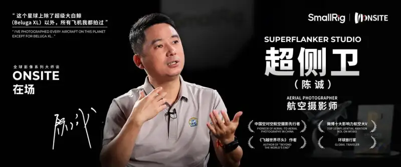
“On this planet, I have photographed every aircraft except that one. The ones in the sky, the ones on the ground, and the ones in museums, all kinds of models. I have also photographed proof-of-concept aircraft and test aircraft.”
Super Flanker said this on the set of the “Onsite” interview column. As a well-known Chinese aviation photographer, Super Flanker has photographed almost every aircraft. He is also a pioneer of air-to-air photography. In his 10 years in the aviation industry, he witnessed four new aircraft: the 777, the 380, the 350, and the 919. Among them, the C919 is China’s first self-developed jet airliner that follows international airworthiness standards and holds independent intellectual property rights. He witnessed its entire journey, from birth to first flight to service.
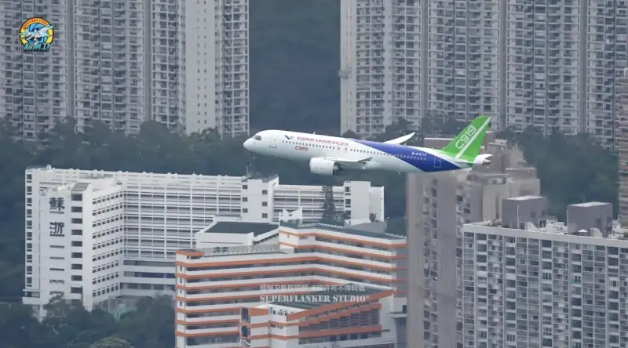
Super Flanker photographing the C919 air-to-air
In this interview, Super Flanker shared his creative journey as an aviation photographer. From the highly difficult and high-risk air-to-air photography to the careful planning that is as rigorous as repairing an aircraft, Super Flanker has recorded and witnessed the development and change of Chinese aviation and aerospace. He also showed the professional skill of a senior aviation photographer.
“Onsite” is a global interview show for imaging masters. It is produced by SmallRig, a brand of Leqi Innovation, a global maker of innovative imaging products. The show invites influential and representative figures in imaging from around the world. They share their creative motives, creative stories, insights, and sources of inspiration.
A Beautiful Aircraft Is a Good Aircraft: Let More People Fall in Love with Aviation
“Super Flanker” can be a person’s name, or the name of an aircraft.
If you search for Super Flanker on Baidu Baike, you get two results.
The hotter entry reads: Super Flanker, author, global traveler, and aviation and aerial photographer, real name Chen Cheng.
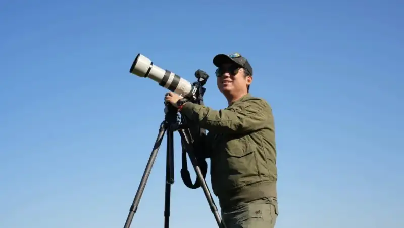
Chen Cheng (Super Flanker)
The next entry reads: the Su-35 fighter, a deeply improved single-seat, twin-engine, super-maneuverable multirole fighter with the NATO reporting name “Flanker-E” or “Super Flanker”.
Behind the two entries lie two stories well worth telling.
The first story is full of passion and idealism. Because he loved aviation and aerospace, Chen Cheng changed his online name to Super Flanker and became a professional aviation and aerospace photographer. After traveling to 50 countries and regions, flying more than 1.5 million kilometers personally, covering more than six continents and over a hundred cities by aerial photography, flying drones for more than 2,000 kilometers, and independently reviewing more than 50 airlines and airports around the world, Super Flanker has become a vital photographer in the field of aviation photography.
The second story is about beauty, and about the charm of aviation photography. At the 2006 Zhuhai Air Show, Chen Cheng saw the Su-35 perform for the first time. This aircraft had excellent maneuverability and a very good-looking shape. It flew as beautifully as a swan. On BBS forums, Chen Cheng wanted to borrow this name to show his unique taste in aircraft. “People who do not know this name are ordinary. People who know this name are people who love aircraft.” So he named himself Super Flanker.
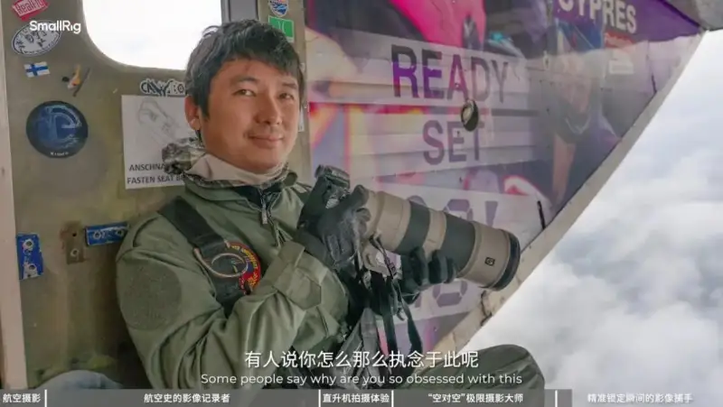
In Super Flanker’s view, the Su-35 is the best-looking aircraft. He strongly agrees with a quote from the chief designer at Dassault: a beautiful aircraft is always a good aircraft. The beauty of the Su-35 comes from its good maneuverability, which lets it push past many human limits during air shows.
This idea, that a beautiful aircraft is always a good aircraft, has in some ways become the most precise summary of Super Flanker’s career. As an aviation photographer, he uses his work again and again to show the world all kinds of beautiful aircraft. Through his effort, he hopes more people will understand what a good aircraft is, fall in love with aircraft, and even join the aviation industry.
The phrase “all kinds of beautiful aircraft” is no exaggeration when it comes to Super Flanker. To date, except for the new Airbus Beluga, he has photographed every aircraft on this planet. The ones in the sky, the ones on the ground, the ones in museums, and all kinds of models.
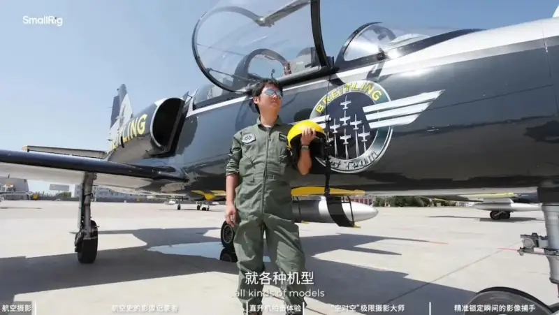
Beyond the outside label of aviation photographer, the identity Super Flanker wants to stress most is that of an enthusiast, a fan of the aviation and aerospace industry. His love for it produced these achievements. His fondness and trust in aircraft is a key cornerstone of his career. It is also what makes him unique as an image creator. As a photographer, he has many traits of a pilot: calm, a sense of the whole, and accurate foresight.
Air-to-Air Photography: A Dangerous and Fascinating Challenge in the Sky
For a long time, aerospace photography has been both a job for Super Flanker. He must find every way to show viewers “beautiful aircraft” and make more people love them. At the same time, it is very much an extreme sport. On every shoot he must challenge a series of difficult, seemingly impossible problems. But when the final goal is reached, he always gains a strong sense of thrill and achievement.
The danger that comes with it is hard to understand unless you take a helicopter yourself and experience it in mid-air.
The staff of the SmallRig Onsite column flew with Super Flanker and his lens. When they reached the sky above Lujiazui in Shanghai, Super Flanker remarked that this special bird’s-eye view gave him a sense of freedom from earth’s gravity.
For aviation photography, the air-to-air photographer and the target aircraft perform a dangerous and fascinating dance in the sky. It requires the photographer to fully adapt to shooting from a helicopter. The moving aircraft serves as the shooting platform, and the photographer shoots another target aircraft moving at high speed. The time the aircraft passes by may be only two or three seconds. As a photographer, you must not waver about the effect you want at the last moment. Success and failure hang on a single instant. So calm and accurate judgment is vital, and it is the highest level in aviation photography. While he enjoys the freedom from earth’s gravity in “air-to-air” shooting, Super Flanker must also stay calm and handle the high danger. When you sit by an open aircraft door to take photos, the risk of falling from a great height is everywhere.
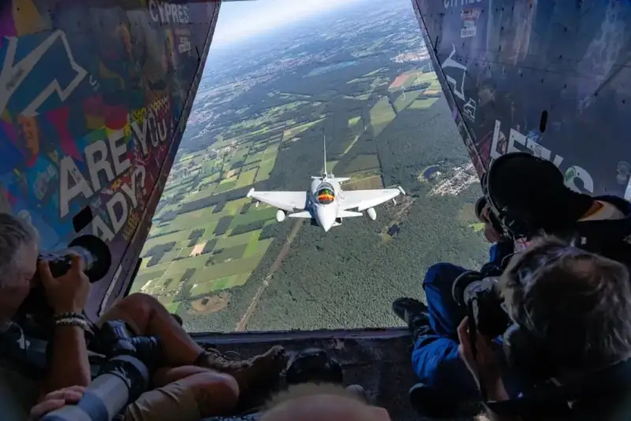
Air-to-air work by Super Flanker
Correspondingly, air-to-air photography tests a photographer’s overall ability. But the first and most special requirement is money. To qualify to shoot, you must first pay a training fee of 100,000 yuan. On top of that, you need to spend more to make sure your equipment is good enough to justify the trip. In other words, if you are not very rich, you must confirm again and again before shooting whether you truly have enough passion for this, and whether you are willing to pay such a high cost. At present, fewer than 200 people worldwide take part in air-to-air shooting. In 2016, after learning about this special path of aviation photography, Super Flanker spent almost all his savings and became one of those 200.
When he first tried air-to-air shooting, Super Flanker felt a thrill that pushed his life to the limit. Throughout the process, the photographer must hang half out of the air the whole time. He must also prepare very warm windproof clothing for the extreme weather at altitude. For flight safety, no foreign object may fly out, so the photographer is not even allowed to change batteries or memory cards in the air. Phones are banned too. Almost all equipment must be tied to the photographer with safety lines. This means air-to-air shooting leaves almost no room for error.
At the same time, the photographer must stay calm, even at 10,000 meters. He must quickly make shooting decisions and control his camera, to finish the planned shot within the very precious and limited time. This places very high demands on a photographer’s physical and mental fitness.
Of course, in air-to-air shooting there is something more important than skill and fitness. You must have clear, accurate judgment and know exactly what you want to shoot. Super Flanker describes this ability as “split-second judgment”. Over many years, all the effort and passion he poured into aviation have ensured that he has this split-second judgment at the key moment.
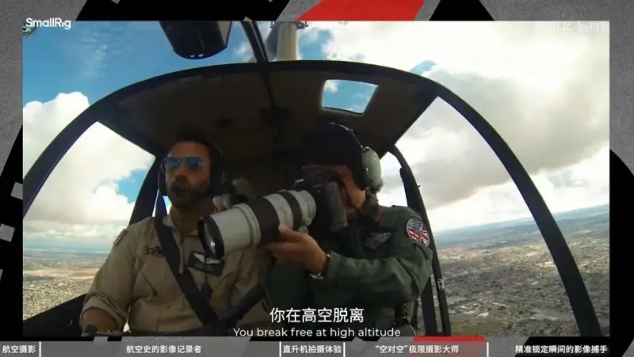
Part of Super Flanker’s judgment comes from his great passion for aviation and his solid professional skill. Before he became a professional aviation photographer, he did very high-intensity aircraft repair work at an airline. A team was two people, repairing aircraft around the clock. This job required him to know every part and every detail of an aircraft by heart.
Another important source of ability is personality. Super Flanker’s personality suits this career path very well. In photography, aviation and aerospace photography is a narrow gate. It is true that passion and interest are key factors that make a photographer stand out in this field. But conviction, the kind that keeps passion and interest for decades without being worn down by great hardship, is clearly more important.
On the interview set, as Super Flanker described and recalled the difficult challenges of his career, he clearly showed the confident side of his personality. Facing the challenges of his profession, he showed a strong execution far beyond ordinary people. In his view, if he wants to finish something, he will plan it thoroughly and make it happen. Just as repairing an aircraft requires checking every item against the aviation manual, Super Flanker has long been used to writing his own “photography manual”, to make sure that every challenge, however hard it looks to others, is finally completed successfully.
From a child who loved aircraft because of aviation magazines, to an aircraft repair worker, to an aviation photographer, Super Flanker’s careful planning of his career shows this trait.
The Persistence of Not Giving Up Even in the Last Minute
To outsiders, this persistence and certainty sometimes looks exaggerated, almost like an obsession. But Super Flanker does not mind putting in such great effort for photography. During one air-to-air shoot in Sydney, he faced a very sudden situation. An aircraft was arriving in Sydney for the first time. He wanted to take an air-to-air photo from above as the aircraft passed over the Sydney Opera House.
As a result, one hour before the aircraft was due to land, air traffic control banned Super Flanker’s helicopter from taking off. Two other photographers gave up their original shooting plan. In their view, the ban meant the plan was completely ruined.
But Super Flanker chose to do everything he could to make it happen, even if only one minute remained before the aircraft landed. Coordinating this with the airline is as hard as suddenly wanting to turn your car around and drive the wrong way on the highway, and asking traffic control to clear a special lane for you.
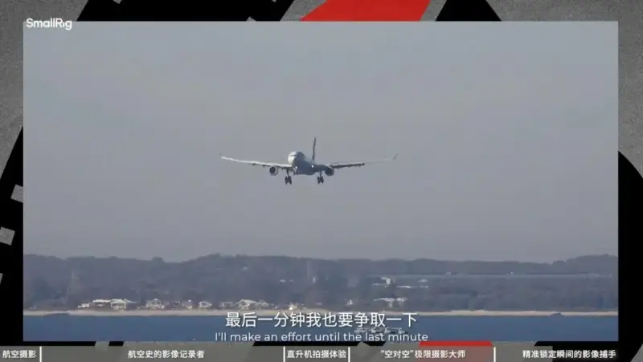
In the end, it was not exactly as planned, and he missed the shot of the aircraft over the Sydney Opera House. But Super Flanker did his best. He held the helicopter hovering over the airport and captured the aircraft landing.
In this whole process, taking the photo often becomes the least important part. Once the photographer has coordinated every aspect and let everything go to plan, he presses the shutter at the right time and place, and he can usually get the shot he wants.
Often, such a shot does not create new history. Perhaps some photographer already took a similar image years ago. In other words, Super Flanker’s effort many times only ensures that certain images are taken by his own hand. It does not matter if he repeats a photo someone else took. The real meaning of creation is that you took this image yourself.
Super Flanker describes this special creative process as climbing a mountain. “It is like crossing a mountain and reaching a goal you once wanted. The image may just be a point in time. It is quite interesting to keep striving for this and to go through it yourself.” A mountain may no longer be unclimbed. Countless people have climbed it before. But if you do not try to climb it yourself once, you will never understand where its meaning lies.
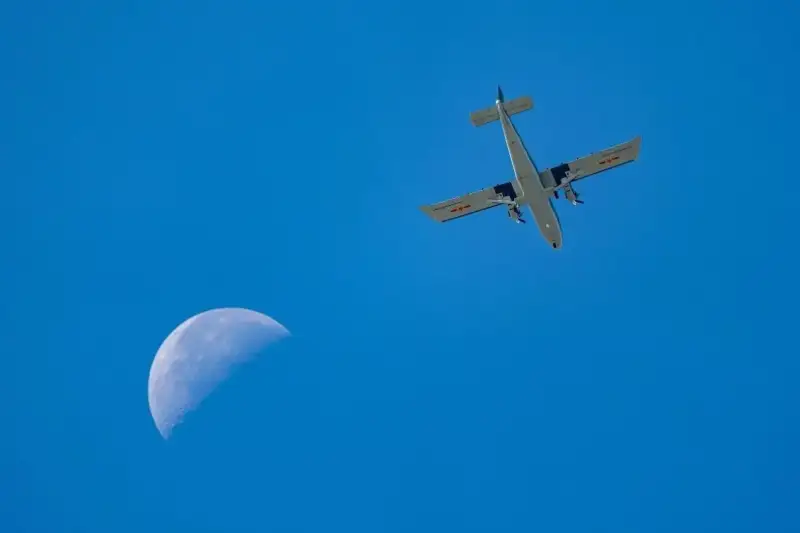
Work by Super Flanker at the 2025 Changchun Air Show
Moreover, the challenge of aviation photography is that the moment you reach the summit only guarantees the photographer’s “presence”. The shooting has not yet begun. In Super Flanker, the word “presence” gains a new space of meaning. The thrill of finishing a shooting plan on site is closely tied to decades of persistence, passion, care, and devotion. For an aviation photographer, the importance of the site is not shown only at the site. The effort behind it clearly matters more. Whether or not you are at the first scene of the shoot, you must first ensure that your attention to the industry and your grasp of the profession are “present”.
Luckily, in character, Super Flanker fully has the persistence and wisdom an aviation photographer needs. The road he walks is often one he must follow on his own. Pay and achievement are unknown. Only the love in your heart is known. To follow your own way in pursuit of what you love is, in some ways, a more extreme form of romance.
He has challenged air-to-air photography countless times, photographed almost every aircraft in the world, and witnessed the most critical growth of China’s aviation industry. In his career, Super Flanker has fulfilled his expected roles as a messenger, a guide, and an inspirer. He has made more and more people fall in love with aviation alongside him.
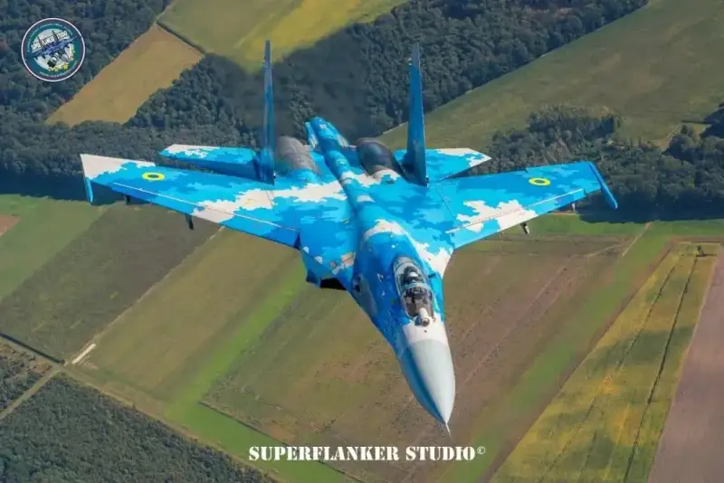
Work by Super Flanker
Whether as an aircraft mechanic, a photographer, a big aviation self-media influencer, or an industry opinion leader, these are only labels outsiders use to understand Super Flanker. For himself, no matter how his identity changes, only the love stays the same, and only the heart that longs to fly stays the same. The little boy who once lacked the chance and means to get close to aircraft may still be a part of Super Flanker today. He still turns his gaze to the sky with a child’s sincerity. He truly hopes that more children who love aviation as he does will avoid the detours he once took.
On the set, the host asked one last question. In this world, what aircraft model has Super Flanker not yet photographed?
Super Flanker answered: there is one, the Airbus Beluga. It is because this aircraft is too new. But it is the only one. And it will be solved soon. He can shoot it at the end of October, and this question will no longer exist.
In Super Flanker’s work, “the question will soon not exist” is always the most attractive moment. To face problems with extreme courage and calm, and to carry out a shooting plan as precisely as a pilot, is the only way to ensure that you are always present at the most critical moment in aviation photography.

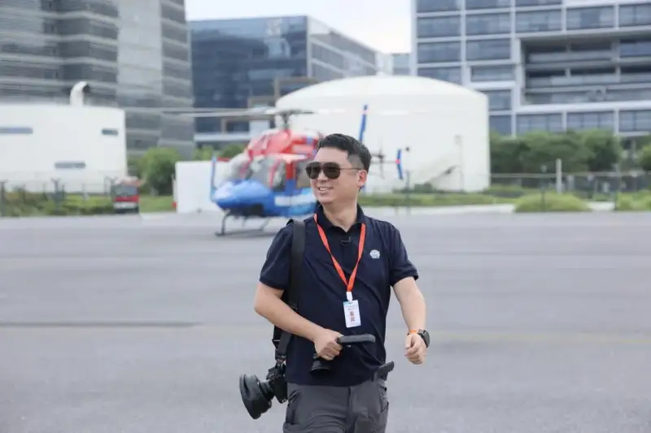
Chen Cheng (Super Flanker)
When you are present, a perfect aviation photograph is already half done.